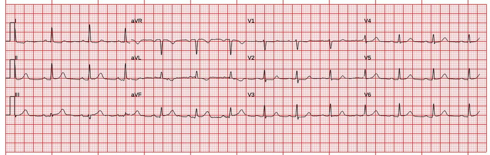
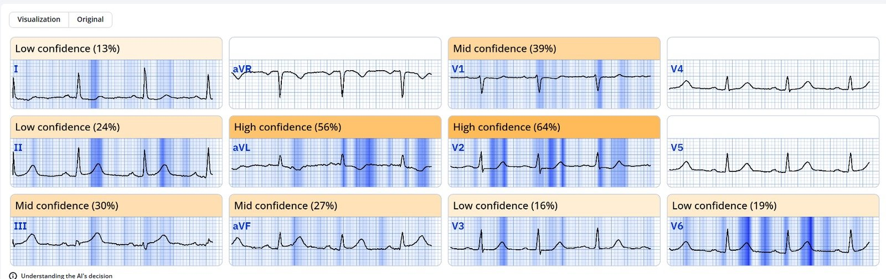
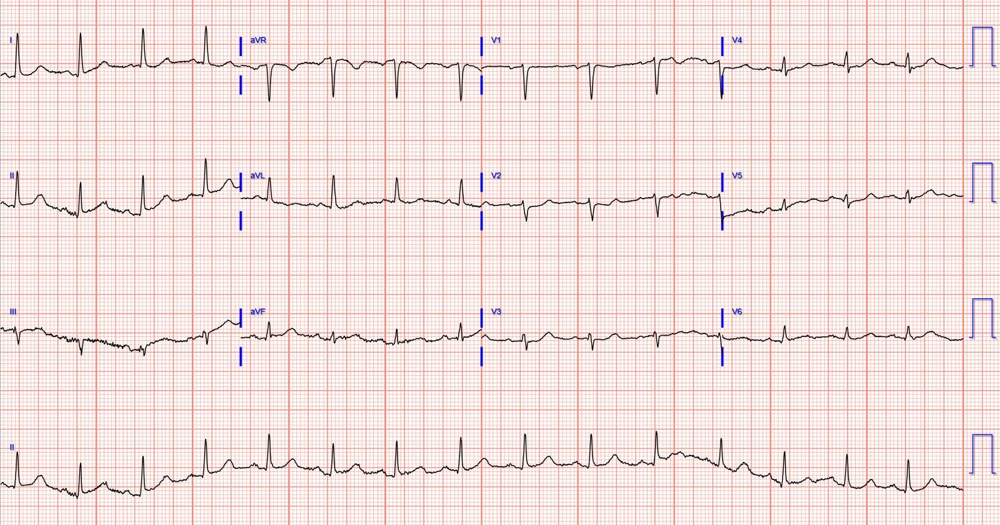
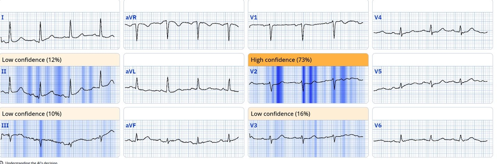
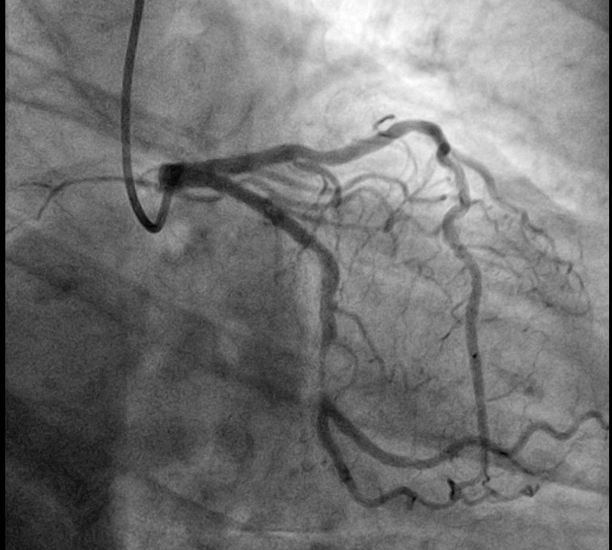
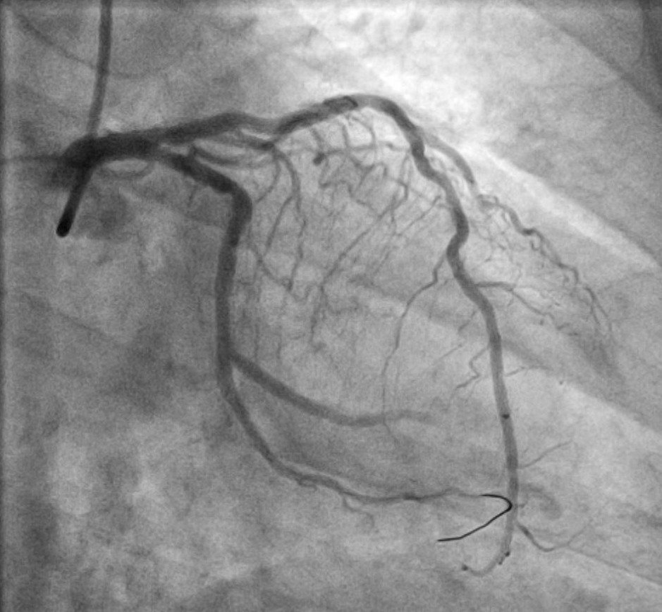
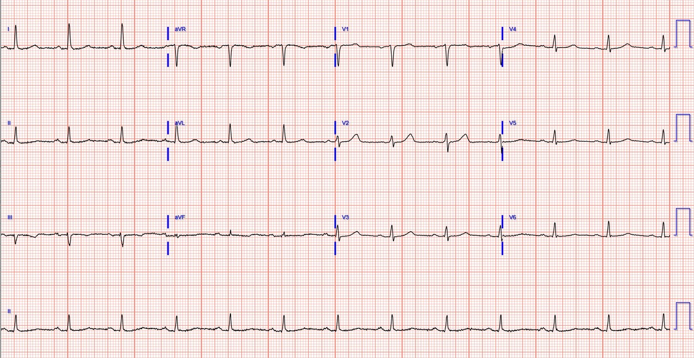
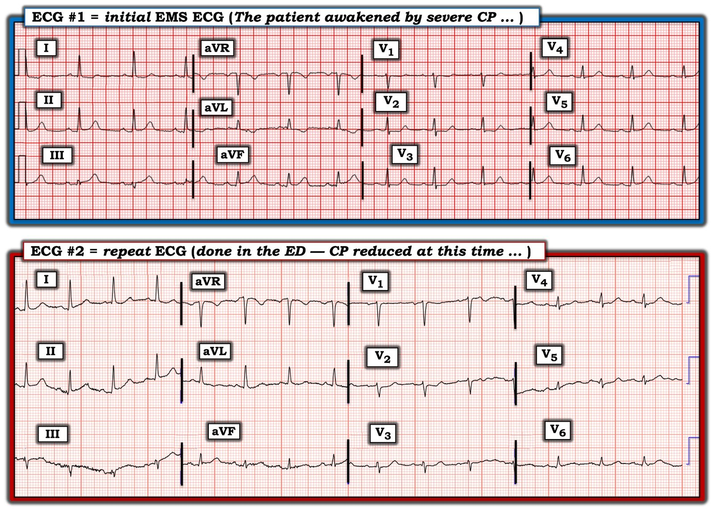
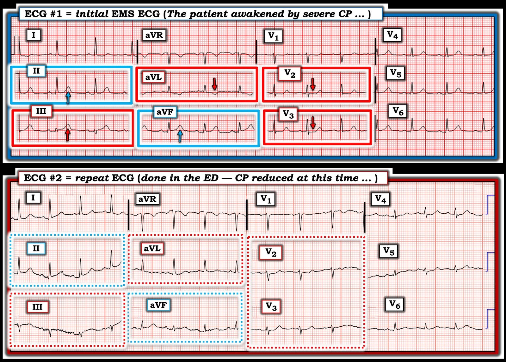

10/11/2024 — Chẩn đoán cuối cùng STEMI hay NSTEMI phụ thuộc vào điều gì?
Bản dịch tiếng Việt của bài "What does a final diagnosis of STEMI vs. NSTEMI depend upon?" – Dr. Smith’s ECG Blog. Giữ nguyên toàn bộ 10 hình ảnh của bản gốc.
Tác giả: Pendell Meyers, Smith chỉnh sửa đôi chỗ
Một phụ nữ ở độ tuổi 70 bị đánh thức khỏi giấc ngủ vì đau ngực giữa xương ức lan ra cánh tay trái kèm buồn nôn. Đội cấp cứu ngoài viện (EMS) đến và ghi điện tâm đồ này:




Smith: đây là một “OMI đang diễn ra” (Active OMI). Động mạch đang bị tắc vào thời điểm này.
Điện tâm đồ cho thấy nhịp xoang, QRS bình thường và các dấu hiệu của OMI dưới-sau-bên. Có ST chênh lên (STE) rất nhỏ ở III và aVF, không đạt tiêu chuẩn STEMI, sóng T tối cấp (hyperacute), sóng T đảo ngược (TWI) soi gương ở aVL, và ST chênh xuống (STD) tối đa ở V2-V3 cho thấy OMI thành sau. Sóng T ở V5-6 nhiều khả năng cũng là sóng T tối cấp.
Điện tâm đồ được truyền tới bác sĩ Cấp cứu, người đã nhận ra các dấu hiệu OMI thành dưới và thành sau, và xác nhận bệnh nhân có triệu chứng có thể là hội chứng vành cấp (ACS).
Phòng thông tim (cath lab) được kích hoạt dù không đạt tiêu chuẩn STEMI, vào khoảng 2 giờ sáng.
Đội cấp cứu ngoài viện đã cho aspirin và nitroglycerin, và bệnh nhân nhận thấy cải thiện rõ rệt khi đến khoa cấp cứu (ED).
Đây là điện tâm đồ của bà khi đến khoa cấp cứu:




Smith: Dù đã cải thiện, điện tâm đồ vẫn cho thấy các dấu hiệu OMI. Queen of Hearts đánh giá từng điện tâm đồ một cách riêng lẻ, không đối chiếu với điện tâm đồ trước đó. Và cô ấy cũng không biết rằng triệu chứng đã cải thiện. Vì vậy cô ấy không thể nói rằng có bằng chứng tái tưới máu, dù là một phần hay hoàn toàn.
Trong tương lai, cô ấy sẽ so sánh với các điện tâm đồ liên tiếp và các điện tâm đồ trước đó. Chỉ là chưa phải bây giờ.
Chúng ta có thể nói rằng đây ít nhất là một OMI đã tái tưới máu một phần. 33% STEMI đã được tái tưới máu vào thời điểm chụp mạch vành. Có những người cố chấp trên Twitter cho rằng vì động mạch đã thông khi chụp mạch, lẽ ra chúng ta không bao giờ nên gọi đó là OMI và bệnh nhân không cần đi chụp mạch vành cấp cứu. Họ không hiểu rằng OMI và STEMI có cùng một cơ chế sinh lý bệnh, và 1/3 trường hợp của cả hai loại sẽ tự thông trở lại.
Vào thời điểm bệnh nhân nhập viện, chúng ta không thể biết ở bệnh nhân nào động mạch sẽ tự thông và ở bệnh nhân nào thì không; vì vậy, tất cả họ đều cần kích hoạt phòng thông tim. Và họ vẫn là OMI tại thời điểm nhập viện, ngay cả khi động mạch đã thông vào lúc chụp mạch.
Thật khó tin là tôi phải giải thích rõ điều này cho những người hoài nghi ấy thường xuyên đến vậy. Rất bực bội. Họ đòi hỏi OMI STEMI âm tính (STEMI (-) OMI) theo một tiêu chuẩn cao hơn nhiều so với OMI STEMI dương tính (STEMI (+) OMI).
Chụp mạch vành được thực hiện nhanh chóng sau khi đến khoa cấp cứu:
Thủ phạm: LCX đoạn giữa hẹp 90%, dòng chảy TIMI 3; đã làm PCI, sau can thiệp dòng chảy TIMI 3.


Không xác định được chính xác dòng chảy TIMI. TIMI-2 hay TIMI-3


Troponin T đầu tiên là 17 ng/mL (trong giới hạn bình thường theo ngưỡng 20 ng/mL)
Các lần troponin tiếp theo:
1,051
2,316
3,437
(không đo thêm)
Một nhồi máu cơ tim với Troponin T 3473 [người dịch: nguyên văn ghi “3473”, nhiều khả năng là lỗi đánh máy của giá trị troponin cuối cùng đo được ở trên] là khá lớn, mặc dù dấu hiệu trên điện tâm đồ rất ít và đã có ít nhất tái tưới máu tự phát một phần. Bệnh nhân này rất may mắn vì đã tái tưới máu tự phát.


Siêu âm tim:
Phân suất tống máu (EF) 42%
Giảm động mức độ vừa ở cơ tim vùng trước bên đoạn giữa và vùng bên đoạn mỏm
Chẩn đoán cuối cùng của bác sĩ tim mạch là “STEMI” dù chưa bao giờ đạt tiêu chuẩn STEMI.
Smith: Pendell và tôi có dữ liệu cho thấy chẩn đoán cuối cùng “STEMI” hay “NSTEMI” không phụ thuộc vào việc có hay không có ST chênh lên, hay có hay không có OMI.
Thực tế, chẩn đoán cuối cùng phụ thuộc vào việc bệnh nhân có thời gian từ cửa đến bóng (door-to-balloon) ngắn hay dài.

==================================
BÌNH LUẬN CỦA TÔI, bởi KEN GRAUER, MD (10/11/2024):
==================================
Hãy xem ca hôm nay như một bài kiểm tra kỹ năng nhận biết khi nào cần kích hoạt phòng thông tim. Hãy XEM LẠI 2 bản ghi đầu tiên trong ca hôm nay — mà tôi đã dựng lại trong Hình 1. BẠN sẽ trả lời các câu hỏi sau như thế nào?
- Biết rằng bệnh nhân hôm nay bị đánh thức bởi CP dữ dội, mới khởi phát (Chest Pain – đau ngực) — Bạn có nhận ra cần kích hoạt phòng thông tim ngay khi vừa nhìn thấy điện tâm đồ ban đầu hôm nay không?
- Bạn có chút do dự nào trong việc kích hoạt phòng thông tim vì điện tâm đồ ban đầu do EMS ghi này không đạt tiêu chuẩn STEMI không?
- Theo bạn, vì sao điện tâm đồ ghi lại trông tốt hơn điện tâm đồ #1?
- Dù cả điện tâm đồ lẫn triệu chứng của bệnh nhân đều cải thiện — Bạn có vẫn thấy cần thông tim sớm sau khi xem điện tâm đồ #2 không?


TRẢ LỜI:
Theo đúng nghĩa đen, tôi chỉ mất không quá vài giây để biết rằng ca hôm nay cần thông tim sớm.
- Bệnh sử trong ca hôm nay là kinh điển của một biến cố tim cấp — khi người phụ nữ lớn tuổi này bị đánh thức khỏi giấc ngủ vì đau ngực lan ra cánh tay trái kèm buồn nôn.
- Với bệnh sử này, và sau khi nhận ra nhịp trong điện tâm đồ #1 là nhịp xoang (sóng P dương ở chuyển đạo II — với khoảng PR hằng định và bình thường) — “con mắt” của tôi ngay lập tức bị thu hút vào chuyển đạo III (chuyển đạo thứ 1 trong các hình chữ nhật ĐỎ ở Hình 2). Với kích thước nhỏ của phức bộ QRS ở chuyển đạo III — không thể nào sóng T “quá đầy đặn” (hypervoluminous) không tương xứng ở chuyển đạo này lại bình thường được.
- Sự xác nhận rằng sóng T ở chuyển đạo III đúng là sóng T tối cấp — đến ngay lập tức từ dấu hiệu ở chuyển đạo aVL: ST-T chênh xuống soi gương (trong hình chữ nhật ĐỎ thứ 2).
- Tiếp theo, “con mắt” của tôi bị thu hút vào 2 chuyển đạo thành dưới còn lại ( = chuyển đạo II và aVF — trong 2 hình chữ nhật XANH ở Hình 2) — dù không bất thường rõ rệt như sóng T ở chuyển đạo III — vẫn cho thấy sóng T “đồ sộ hơn mức lẽ ra phải có”, xét đến kích thước QRS khiêm tốn ở các chuyển đạo này (mũi tên XANH ở chuyển đạo II và aVF). Trong bối cảnh có sóng T tối cấp ở chuyển đạo III, kèm ST chênh xuống soi gương ở chuyển đạo aVL — tôi diễn giải sóng T ở chuyển đạo II và aVF cũng là sóng T tối cấp.
- Cuối cùng — Mọi nghi ngờ có thể còn sót lại đều bị xóa bỏ ngay lập tức khi nhìn thấy hình dạng QRST của chuyển đạo V2 và V3 trong các chuyển đạo trước tim (trong 2 hình chữ nhật ĐỎ cuối cùng ở Hình 2). 2 chuyển đạo trước tim này cho thấy: i) Vùng chuyển tiếp sớm đột ngột với sóng R cao đáng ngạc nhiên ngay từ chuyển đạo V2; — và, ii) ST chênh xuống phẳng dạng bậc thềm (shelf-like) với phần cuối sóng T dương, chỉ rõ OMI thành sau (mũi tên ĐỎ ở các chuyển đạo này).
- NHẬN ĐỊNH về điện tâm đồ #1: Ở người phụ nữ lớn tuổi đến khám vì CP mới xuất hiện và dữ dội này — hình ảnh điện tâm đồ này hoàn toàn chẩn đoán xác định OMI dưới-sau cấp (cần thông tim sớm kèm PCI).
Bạn có do dự vì không đạt tiêu chuẩn STEMI?
May mắn thay — Cả bác sĩ cấp cứu lẫn bác sĩ tim mạch đều không do dự. Bệnh nhân được đưa ngay tới phòng thông tim — nơi phát hiện tổn thương “thủ phạm” ở LCx đoạn giữa và đặt stent thành công.
- XIN NHẤN MẠNH: Không có gì trong quá trình đánh giá thêm có thể làm thay đổi quyết định kích hoạt phòng thông tim. Bất kể các điện tâm đồ liên tiếp hay Troponin có cho thấy gì — nhu cầu thông tim sớm vẫn sẽ còn nguyên. Vậy TẠI SAO phải chờ?
- Lối tư duy vẫn còn quá phổ biến là không thông tim cấp trừ khi điện tâm đồ đạt tiêu chuẩn STEMI — cần phải thay đổi. Câu hỏi lâm sàng cần được đặt ra không phải là có đạt tiêu chuẩn STEMI hay không — mà là bệnh sử và điện tâm đồ có gợi ý một biến cố tim cấp đang tiến triển hay không (bất kể có hay không có “đủ” ST chênh lên để được xếp là STEMI ).
- Việc các bác sĩ lâm sàng tham gia ca hôm nay hiểu điểm MẤU CHỐT này — thể hiện rõ qua thực tế là chẩn đoán cuối cùng của bác sĩ tim mạch là “STEMI”, dù các điện tâm đồ chưa bao giờ đạt tiêu chuẩn STEMI.
- Theo BS. Meyers và Smith — chẩn đoán cuối cùng là “STEMI” hay “NSTEMI” chủ yếu phụ thuộc vào thời gian từ cửa đến bóng (door-to-balloon) dài hay ngắn. Sự sâu sắc được truyền tải trong thông điệp giảng dạy này thật mạnh mẽ! (tức là, NẾU bác sĩ can thiệp nhận ra các dấu hiệu điện tâm đồ của OMI cấp trước khi đủ thời gian để ST chênh lên kịp hình thành — thì PCI thành công sẽ có nghĩa là động mạch “thủ phạm” được mở thông, và ST chênh lên sẽ không bao giờ xuất hiện).
- Chờ ST chênh lên xuất hiện khi chẩn đoán OMI cấp đã chắc chắn — là chờ quá lâu (như đã có thể xảy ra nếu bác sĩ cấp cứu và bác sĩ tim mạch trong ca hôm nay trì hoãn thông tim).
Vì sao điện tâm đồ ghi lại trông tốt hơn điện tâm đồ #1?
Câu trả lời cho câu hỏi này trở nên hiển nhiên khi đối chiếu bệnh sử lâm sàng với 2 điện tâm đồ đầu tiên này.
- Như BS. Smith đã nhấn mạnh trong bài ngày 8 tháng Mười Một năm 2024 — có tới 1/3 tổng số STEMI cấp tái tưới máu tự phát trước khi được điều trị. Trên lâm sàng, chúng ta thường có thể nhận biết khi nào xảy ra tái tưới máu tự phát như vậy — vì: i) CP của bệnh nhân hết (hoặc ít nhất là giảm); — và, ii) ST chênh lên hết (hoặc ít nhất là giảm) — và có thể thấy sóng T tái tưới máu.
- Trong ca hôm nay — bệnh nhân cảm thấy đỡ hơn vào lúc ghi điện tâm đồ #2. So sánh đặt cạnh nhau giữa điện tâm đồ #1 và điện tâm đồ #2 ở Hình 2 — cho thấy rõ sự cải thiện triệu chứng này tương ứng với mức cải thiện tương đương của sóng T tối cấp ở các chuyển đạo thành dưới và của thay đổi soi gương ở chuyển đạo aVL.
- Ở các chuyển đạo trước tim — Lưu ý rằng sóng R cao đáng ngạc nhiên ở V2,V3 không còn trên điện tâm đồ ghi lại nữa! (ĐIỂM THEN CHỐT (PEARL): Vùng chuyển tiếp sớm với sóng R ở các chuyển đạo trước cao bất thường là một dấu hiệu “tương đương sóng Q” (Q wave equivalent) khi có OMI thành sau — vì vậy tôi diễn giải việc sóng R cao ở V2,V3 biến mất là thêm một chỉ dấu của tái tưới máu thành sau).
- KẾT LUẬN: Gần như chắc chắn đã có một mức độ tái tưới máu tự phát nào đó vào lúc ghi điện tâm đồ #2.
Có còn cần thông tim sớm kèm PCI khi đã có tái tưới máu tự phát?
Câu trả lời cho câu hỏi này chắc chắn là CÓ — vì: i) Dù đã có một phần tái tưới máu tự phát vào lúc bệnh nhân đến khoa cấp cứu — hiếm khi có tái tưới máu tự phát hoàn toàn (bằng chứng là chỗ hẹp 90% ở LCx đoạn giữa vẫn còn vào lúc thông tim); — và, ii) “Trạng thái ổn định” cuối cùng của biến cố mạch vành cấp vẫn đang tiến triển — và, những gì đã tự thông trở lại — cũng có thể dễ dàng (và vào bất kỳ lúc nào) tự tắc lại.
- ĐIỀU CỐT LÕI: Dựa vào bệnh sử, đối chiếu với các điện tâm đồ liên tiếp (cũng như với các giá trị Troponin tăng) — Chúng ta đã chẩn đoán OMI dưới-sau cấp. Vì vậy, dù việc bệnh nhân cảm thấy đỡ hơn sau ASA và nitroglycerin là điều tốt — cũng như việc các thay đổi ST-T cấp thấy ở điện tâm đồ #1 đã cải thiện ở điện tâm đồ #2 là điều tốt — bệnh nhân vẫn có nguy cơ cao tắc lại tự phát. Cần thông tim sớm kèm PCI để ngăn điều này (và để tối ưu hóa kết cục).

